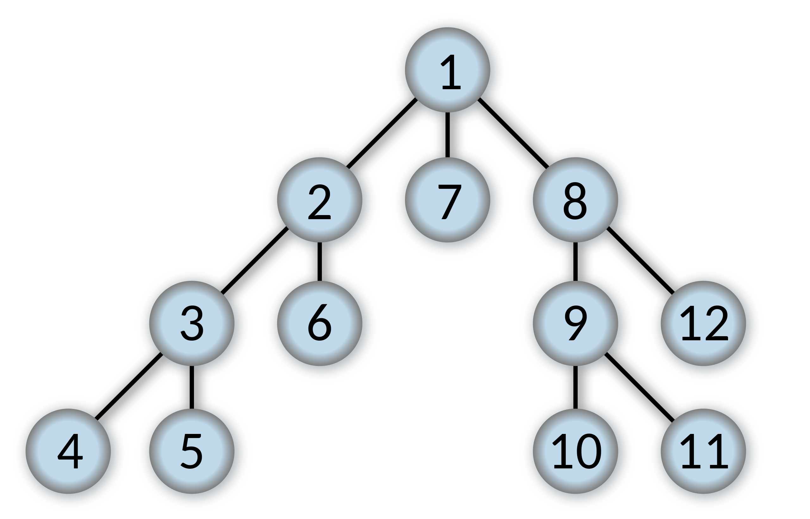

项目1 搜索
项目要求：Project 1：Search CS 188: Introduction to Artificial Intelligence, Fall 2018 (berkeley.edu)
编辑内容仅限于search.py和searchAgents.py，需要阅读pacman.py,game.py和util.py。
Python版本要求3.6
由于判题脚本autograder.py的要求，Python环境应设置为3.6。
下面直接开始。
problem类的几个常见方法
题目中大量使用了getSuccessor和getStartState，前者负责给出后继点信息，后者给出图的初始点，其输出为：
start = getStartState()的输出，就是一个点start = (35,1)，表示图中pacman的位置；
第二行是getSuccessor(start)的输出样例，给出了两个同构型元胞构成的列表，每个元胞分别由三个元素组成：（1）点(x,y)，即下个点的位置坐标；（2）action，表示为方向(东南西北)，表示从当前状态start出发到点(x,y)所需要执行的动作；（3）cost，即完成一步动作所支付的成本。
Question 1 - DFS
Finding a Fixed Food Dot using Depth First Search 利用深度优先搜索寻找一个固定位置的豆子
任务：实现search.py下的函数depthFirstSearch(problem)
实现过程：
首先，回顾DFS的思想。我们需要首先直到初始位置在哪，这不需要我们自行定义，而是调用该函数参数problem中的API，“getStartState”，不难理解。同时，DFS是一个先进后出的算法，因此需要一个栈，util.py已经为我们定义了这样的数据结构，然后，把出发状态start压进栈中。
这里传入栈中的是
(start, [])元胞，第一项是当前状态位置，第二项指代的是path，即从start到该节点的路径，显然，start到start并不需要任何路径。
另外定义一个集合，用以存储那些已经探索过的节点：
剩下的事情都是循环：
- 如果栈中最先拿出的（最后存入的）节点是目标节点，算法结束并传回结果——结果就是元胞(node, path)中的path
- 如果不是目标节点，则将其直接子节点加入栈中，重复以上目标。
- 如果不是目标节点且没有未探索过的直接子节点，则回退到上一级，表现为这个while循环中，从堆栈中将当前节点pop出来扔掉以外，什么都没发生，重新判断上层节点。
-
while not stack.isEmpty():
node, path = stack.pop()
if problem.isGoalState(node):
return path
if node not in visited:
visited.add(node)
for successor in problem.getSuccessors(node):
stack.push((successor[0], path + [successor[1]]))
以下图的树为例（来自Wikipedia），来讲述搜索过程中的出入栈操作。假定我们要找的是节点4

- 一开始，栈是空的，状态
start是1，且visited列表是空的，表示没探索过任何节点。 - 首先从当前的节点1开始，将该点及其路径
{1,[]}压入栈。然后开始判断，又要把这个点pop出来，显然，节点1没有探索过，也不是目标节点，所以将1写入visited，表示已经探索过了，然后通过getSuccessors方法获取节点1的后续节点，即2、7、8。以节点2为例，实际获取的应当是{2,[1,2]}，既表示了2的名称，又写明了与初始节点1的路径关系。2、7、8同时被压入栈（栈中只有他仨），进入下一次的循环 - 按照先进后出的原则，下一轮从stack.pop中读出的其实是节点8，但对于DFS来说，同一层级的节点先后顺序不重要，所以看起来是倒着来的。8不是目标节点，但也没有探索过，所以和第二步一样，将其写入
visited，并压入其子节点9、12。现在栈中按顺序为2、7、9、12，下一轮判断12。 - 12不是目标节点、没有（没有被评估过的）子节点，因此pop掉就pop掉了，栈中剩下2、7、9，下一轮评估9，与步骤2、3都一样。
- 评估9，压入10、11；10、11分别评估后出栈，栈中只剩2、7。而8的所有子树都已评估过了，又回到了一级子节点。
- 评估7，然后再评估2的那棵子树，就和前面的步骤一样，直到找到节点4，返回其路径
[1,2,3,4]，算法结束。
Question 2 - BFS
Implement the breadth-first search (BFS) algorithm in the
breadthFirstSearchfunction insearch.py. Again, write a graph search algorithm that avoids expanding any already visited states. Test your code the same way you did for depth-first search.在
search.py文件中的breadthFirstSearch函数中实现广度优先遍历（BFS）算法。一样的，写出避免评估任何已经评估过状态的图搜索算法，用与DFS题目一样的方式测试你的代码。
任务：实现图的广度优先遍历算法。
实现过程： 与DFS不同的是，BFS并不适合使用栈来实现，而是使用队列（queue），即先进先出的数据结构。与Stack一样，queue同样有push、pop操作，但是queue的push是将新数据插入到列表的最前面（索引0，而stack则是正常的append），从而queue每次pop出来的都是最后一项——第一个被push进去的数据。
除了stack/queue的区别外，DFS和BFS在实现中基本一致，先进先出保证了查完一层后才会进入到下一层——而下一层的子节点在本层各节点的遍历过程中被按顺序push进了queue中。
def breadthFirstSearch(problem):
"""Search the shallowest nodes in the search tree first."""
"*** YOUR CODE HERE ***"
start = problem.getStartState()
queue = util.Queue()
queue.push((start, []))
visited = set()
while not queue.isEmpty():
node, path = queue.pop()
if problem.isGoalState(node):
return path
if node not in visited:
visited.add(node)
for successor in problem.getSuccessors(node):
queue.push((successor[0], path + [successor[1]]))
还是上面那张图，应该有如下顺序： 1-2-7-8-3-6-9-12-4-END
Question 3 - 变换成本函数（统一成本搜索）
任务：在search.py的uniformCostSearch函数中实现Uniformed Cost Search。
UCS算是BFS的一种特例，采用的仍然是一种queue，但是出的顺序并非先进先出，而是有优先级“priority”。
特殊的队列：Priority Queue
首先讨论这种数据结构priority queue。其python实现为：
class PriorityQueue:
def __init__(self):
self.heap = []
self.count = 0
def push(self, item, priority):
entry = (priority, self.count, item)
heapq.heappush(self.heap, entry)
self.count += 1
def pop(self):
(_, _, item) = heapq.heappop(self.heap)
return item
def isEmpty(self):
return len(self.heap) == 0
def update(self, item, priority):
for index, (p, c, i) in enumerate(self.heap):
if i == item:
if p <= priority:
break
del self.heap[index]
self.heap.append((priority, c, item))
heapq.heapify(self.heap)
break
else:
self.push(item, priority)
update的方法。在使用push传入数据时，需要多传一个参数，即priority。例如在UCS的一开始，向queue传入的第一个参数就与BFS时不同，而是：
数据仍然是那个数据，节点的位置、到这个节点的action序列，但是多了一个单独的参数，由于start到start没有行动，也不需要成本，所以priority是0。
而且，其push方法的实现也有较大的区别，它采用了heap方法，并调用了标准库heapq(heapq官方文档)，其中使用了三个方法：
首先，heap本质上仍然是列表改。可以直接新建一个空列表建堆，也可以用
heapq.heapify()将现有的非空列表改为堆。
heapq.heappush(heap,item)。将item的值加入heap。heapq.heappop(heap)。将heap中priority最小的元素pop出来。实际上，这相当于访问并删除heap[0]，因为heap会将priority最小的元素置于最前。heapq.heapity(x)。将非空列表x转换为一个heap。
它多了一个update的方法，因为heap会被不断重建。
- 如果传入的item已经存在于现有的heap，但具有更高的priority，则更新其为更低的priority——删去heap中原有的item条目，将新的条目（新的priority）放进heap那个列表里，然后用heapify做排序，成为新的heap。
- 如果item已经存在且具有更低的priority，什么都不需要做。
- 如果item不存在于现在的heap中，则将其存入heap，并使用heappush来给item找到合适的位置。
回到题目
那其实，和BFS没什么大的区别，就是queue变成PriorityQueue，传入多一个priority，即路线的总成本：
def uniformCostSearch(problem):
"""Search the node of least total cost first."""
"*** YOUR CODE HERE ***"
start = problem.getStartState()
queue = util.PriorityQueue()
queue.push((start, []), 0)
visited = set()
while not queue.isEmpty():
node, path = queue.pop()
if problem.isGoalState(node):
return path
if node not in visited:
visited.add(node)
for successor in problem.getSuccessors(node):
queue.push((successor[0], path + [successor[1]]), problem.getCostOfActions(path + [successor[1]]))
getCostOfActions方法来获取。
Question 4 - Astar Search
从现在开始进入知情搜索（informed search）部分。第四题要求实现图模型上的Astar 搜索方法。
Implement Astar graph search in the empty function
aStarSearchinsearch.py. Astar takes a heuristic function as an argument. Heuristics take two arguments: a state in the search problem (the main argument), and the problem itself (for reference information). ThenullHeuristicheuristic function insearch.pyis a trivial example.在
search.py中的空函数aStarSearch中实现Astar 图搜索。Astar 需要获取一个启发函数作为实参。启发函数需要两个实参：主参数为搜索问题中的现有状态，并需要搜索问题本身提供参考信息。文件中给出的nullHeuristic函数是启发函数的平凡实例。
它可以被认为是UCS的进一步发展，唯一的改动在于priority的构成：
def aStarSearch(problem, heuristic=nullHeuristic):
"""Search the node that has the lowest combined cost and heuristic first."""
"*** YOUR CODE HERE ***"
start = problem.getStartState()
queue = util.PriorityQueue()
queue.push((start, []), 0)
visited = set()
while not queue.isEmpty():
node, path = queue.pop()
if problem.isGoalState(node):
return path
if node not in visited:
visited.add(node)
for successor in problem.getSuccessors(node):
queue.push((successor[0], path + [successor[1]]),
problem.getCostOfActions(path + [successor[1]]) + heuristic(successor[0], problem))
打眼一看与UCS区别不大，都使用了priority queue，唯一的区别是多传入了一个方法heuristic(node, problem)，这是启发式方法和盲目搜索之间的本质区别。Astar 方法的priority不仅包含了当前节点与出发节点的成本（距离，也就是UCS里本就有的部分），还包括了“启发式动力”，即当前节点与目标节点的估计前向成本（estimated forward cost），这一部分由heuristic方法导入。前向成本的估计方法多种多样，是启发式方法的核心部分，常见的方式有曼哈顿距离（Manhattan Distance），即两点坐标各维度差的绝对值之和：
def manhattanHeuristic(position, problem, info={}):
"The Manhattan distance heuristic for a PositionSearchProblem"
xy1 = position
xy2 = problem.goal
return abs(xy1[0] - xy2[0]) + abs(xy1[1] - xy2[1])
另一种常见的启发式算法是贪心搜索（greedy search），它虽然也使用了priority queue，但其priority只考虑前向成本，而不考虑既有成本（即当前节点与出发节点的成本）。
启发式函数只能低估，而绝不能高估行动的真实成本
参照Homework 1 Q7.3。假定有K个小虫子，走向各自不同的的K个目标点，而且虫子只能走华容道——不能互相交换也不能重叠，但每个时间点所有虫子都可以考虑移动一格。那么以下能作为启发式函数的是？
（1）Sum of Manhattan distances from each insect's location to its target location.每个虫子与其目标点的曼哈顿距离之和。不可以，假定所有虫子离目标点都只有一格，那么真实时间成本是1，而这种函数将返回\(K\)，高估了真实成本。
（2）Sum of costs of optimal paths for each insect to its goal if it were acting alone in the environment, unobstructed by the other insects.假定环境中只有一个虫子时，各自独立决策下的最优路径成本求和。不可以，原因同上。
（3）Number of insects that have not yet reached their target location.还没有到达目标点的虫子总数。不可以，原因同上。
（4）Max of Manhattan distances from each insect's location to its target location.各个虫子距离目标点的曼哈顿距离中的最大值。可以，因为真实成本一定不会小于离目标最远的虫子的距离（即便环境中只有那么一只虫子）。而且因为有多只虫子且会被阻挡，因此真实成本只可能比这更高，符合低估原则。
（5）Max of costs of optimal paths for each insect to its goal if it were acting alone in the environment, unobstructed by the other insects.假定环境中只有一个虫子时，虫子与目标点间最优路径的成本中的最大值。可以，原因同上。
Question 5-6 Corner Problem
下面的两个问题进一步将图上搜索复杂化。考虑一个四角迷宫，每个角上有一个点。新的搜索问题是找到最短的路径，使得Pacman遍历四个角点（无论这个点上有没有豆子）。这种情况下，部分迷宫形式的最短路径并不见得是一开始就吃掉最近的豆子。
Implement the
CornersProblemsearch problem insearchAgents.py. You will need to choose a state representation that encodes all the information necessary to detect whether all four corners have been reached.完成
searchAgents.py中的CornersProblem类。您需要选择一种状态表示，对检测是否已到达所有四个角所需的所有信息进行编码。
在这两个题目中，要完成class CornersProblem(search.SearchProblem):中的内容，包括但不限于此问题下的getStartState方法、isGoalState方法、getSuccessors方法等。
Question 5 - 问题的定义
class CornersProblem(search.SearchProblem):
"""
This search problem finds paths through all four corners of a layout.
You must select a suitable state space and successor function """
def __init__(self, startingGameState):
"""
Stores the walls, pacman's starting position and corners. """
self.walls = startingGameState.getWalls()
self.startingPosition = startingGameState.getPacmanPosition()
top, right = self.walls.height-2, self.walls.width-2
self.corners = ((1,1), (1,top), (right, 1), (right, top))
for corner in self.corners:
if not startingGameState.hasFood(*corner):
print('Warning: no food in corner ' + str(corner))
self._expanded = 0 # DO NOT CHANGE; Number of search nodes expanded
# Please add any code here which you would like to use
# in initializing the problem
"*** YOUR CODE HERE ***"
def getStartState(self):
"""
Returns the start state (in your state space, not the full Pacman state
space)
"""
"*** YOUR CODE HERE ***"
return self.startingPosition, tuple()
def isGoalState(self, state):
"""
Returns whether this search state is a goal state of the problem.
"""
"*** YOUR CODE HERE ***"
return len(state[1]) == 4
def getSuccessors(self, state):
"""
Returns successor states, the actions they require, and a cost of 1.
As noted in search.py:
For a given state, this should return a list of triples, (successor,
action, stepCost), where 'successor' is a successor to the current
state, 'action' is the action required to get there, and 'stepCost'
is the incremental cost of expanding to that successor
"""
successors = []
for action in [Directions.NORTH, Directions.SOUTH, Directions.EAST, Directions.WEST]:
# Add a successor state to the successor list if the action is legal
# Here's a code snippet for figuring out whether a new position hits a wall:
# x,y = currentPosition
# dx, dy = Actions.directionToVector(action)
# nextx, nexty = int(x + dx), int(y + dy)
# hitsWall = self.walls[nextx][nexty]
"*** YOUR CODE HERE ***"
currentPosition, corners = state
x, y = currentPosition
dx, dy = Actions.directionToVector(action)
nextx, nexty = int(x + dx), int(y + dy)
hitsWall = self.walls[nextx][nexty]
if not hitsWall:
nextPosition = (nextx, nexty)
nextCorners = tuple(corner for corner in self.corners if corner not in corners and corner == nextPosition or corner in corners)
successors.append(((nextPosition, nextCorners), action, 1))
return successors
self._expanded += 1 # DO NOT CHANGE
return successors
def getCostOfActions(self, actions):
"""
Returns the cost of a particular sequence of actions. If those actions
include an illegal move, return 999999. This is implemented for you.
"""
if actions == None: return 999999
x,y= self.startingPosition
for action in actions:
dx, dy = Actions.directionToVector(action)
x, y = int(x + dx), int(y + dy)
if self.walls[x][y]: return 999999
return len(actions)
其中__init__和getCostOfActions无需修改。其实没有想象中复杂，就是重新定义一下目标——我们的目标不再是特定的state位置，而是走过角点的计数，体现在代码里，就是查询state时额外加入的tuplecorners，它存储了已经走过的角落的位置信息，我们需要的也不是它的位置，而是这个tuple的长度：
def isGoalState(self, state):
"""
Returns whether this search state is a goal state of the problem.
"""
return len(state[1]) == 4
最关键的还是getSuccessors方法的构造。其实也不困难，因为这里不涉及到任何搜索方法，只需要在当前节点基础上，找到可行动作——不撞墙就行，然后把它压进successor列表里返回给搜索算法。
如果动作可行——没有撞上墙，那么就把动作后的位置、动作后踩过的corner集合nextcorners写出来，然后按照给定的数据结构：((nextState, nextCorners), action, cost)返回给算法，cost给定为1即可，这里不涉及启发式问题。
Question 6 - 启发函数
Implement a non-trivial, consistent heuristic for the
CornersProblemincornersHeuristic.在
cornersHeuristic空方法里实现一个非平凡的，一致的启发式函数。
最简单的就是同时计算与尚未踩到的各个角的Manhattan距离，取最大值(不可以取总和，原因在前面的Ques 4)。
def cornersHeuristic(state, problem):
corners = problem.corners # These are the corner coordinates
walls = problem.walls # These are the walls of the maze, as a Grid (game.py)
"*** YOUR CODE HERE ***"
totalDistance = []
for corner in corners:
if corner not in state[1]:
totalDistance.append(util.manhattanDistance(state[0], corner))
if len(totalDistance) == 0:
return 0
else:
return max(totalDistance)
这样就能拿满这道题的分数了。
Question 7 - 吃光所有豆
将目光转移到FoodSearchProblem类上。用尽可能少的步骤吃光地图上所有的豆子。此时的state变成了：
其中foodGrid表示一个和迷宫地图大小相同的Boolean矩阵，当对应点上存在豆子时赋True，否则为False。那么我们遍历每一个为True的点，然后调用MazeDistance函数来获取当前位置与各豆子的图上距离，并选取其中的最大值——和上一题一样。
def foodHeuristic(state, problem):
position, foodGrid = state
"*** YOUR CODE HERE ***"
foodList = foodGrid.asList()
max_distance = 0
for food in foodList:
distance = mazeDistance(position, food, problem.startingGameState)
if distance > max_distance:
max_distance = distance
return max_distance
采用该启发式函数可以获取该题目的bonus grade（5/4），因为展开节点的子节点树的次数（number of nodes expanded）小于7000。
Question 8 - 次优解
任务：
-
修改
findPathToClosestDot方法 -
修改
AnyFoodSearchProblem类中的isGoalState方法。
首先要补上任务2的内容，这个问题没有给出判别目标状态的方法：
def isGoalState(self, state):
x,y = state
"*** YOUR CODE HERE ***"
return (x,y) in self.food.asList()
其实问题本身只告诉你要做任务1，但是其中引用了AnyFoodSearchProblem问题，即随便吃一个地图中的豆的问题，所以要补。再者说，这里也没要求最优解，次优解即可，吃哪个豆都无所谓。
进一步，回到任务1，为了尽量使找到的豆离当前位置最近，要用什么搜索方法？答案是BFS，因为它会一层一层的探索，只有第\(i\)层子节点找不到目标状态才去下一层，具象在地图上，就是不扫清楚离当前节点距离为\(i\)的所有格子，它不回去找距离为\(i+1\)的格子。
def findPathToClosestDot(self, gameState):
startPosition = gameState.getPacmanPosition()
food = gameState.getFood()
walls = gameState.getWalls()
problem = AnyFoodSearchProblem(gameState)
"*** YOUR CODE HERE ***"
return search.bfs(problem)
至此，Project 1内容结束，按照题头的指引，在shell中运行：
来获取各题目的本地评分。